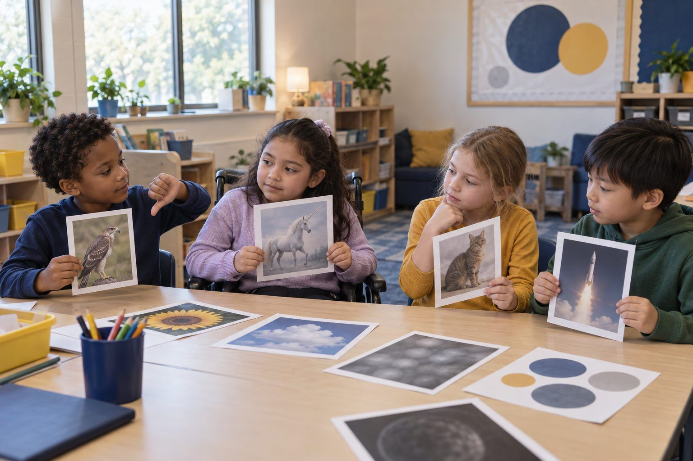

Student learningfor Grades 9–12
Deepfake Election Desk
Student newsroom teams race a deadline to decide which election-week tips are real, which are synthetic, and which they simply can't confirm yet.

All activities Student learning
Children discover that every picture, video, song, and game was made by someone for a reason, and practice asking "Who made this, and why?"
Young children often experience media as something that just appears on a screen or a shelf. In this lesson they meet the makers behind it. You describe familiar kinds of media (a picture book, a cereal box, a cartoon, a game, a school poster, a picture made with an AI tool), and children answer two detective questions: Who made this? (a person, a company, or a person using AI) and Why did they make it? (to teach, to sell, to have fun, or to tell news). Children walk to "why" corners, then become makers themselves. The big idea they carry home: every piece of media was made by someone, on purpose, and good makers are honest about how they made it.
Hook
Hold up the drawing you made. Ask: "Who made this picture?" Children guess; point to your signature. "I did! I made it to show you my cat." Then hold up the picture book: "Who made this?" Show the author's and illustrator's names on the cover. Then the cereal box or package: "Who made the cartoon on this box?" (A company: lots of people who work together.) Say: "Everything we read, watch, or play was made by someone. Today we're maker detectives."
Facilitator noteChildren may say "the store" or "the TV" made it. That's the misconception this lesson targets. Ask, "Who made it before it got to the store?"
Model
Teach the two questions with gestures. "Who made this?" (point both thumbs at yourself). "Why did they make it?" (hands open, palms up). Introduce the four corners: TEACH (to help you learn), SELL (to get you to buy something), FUN (to make you laugh, play, or enjoy), NEWS (to tell what happened). Model Maker Card 1 aloud: "A picture book about how frogs grow. Who made it? An author and an illustrator. Why? To teach, and it's fun too!" Say: "Sometimes there's more than one reason. Pick the biggest one."
Facilitator noteKeep "company" simple: "a group of people who work together to make and sell things."
Explore
Read Maker Cards 2–10 aloud one at a time. For each card, children first do the "Who made this?" gesture and a few children answer out loud (a person, a company, a news team, a person using an AI tool). Then everyone walks to the corner that shows why. Ask one child in each corner, "Why did you pick this corner?" Accept reasoned answers even when they differ from the key: the toy commercial is fun AND selling. The biggest reason is selling.
Facilitator noteLook-for: children who give a because. "It's SELL because it tells you to ask for it" is the thinking you want. If the room is small, use hand signs instead of corners.
Explore
Read Maker Cards 11 and 12 slowly. Say: "Some people use an AI tool to help make pictures or words. The person types what they want, and the computer makes a picture from patterns it learned. Who decided to make the turtle picture? (Mr. Okafor.) Why? (To make the reading corner fun.) Did the computer decide that? (No, a person did.)" Then ask: "Mr. Okafor put a little note on it: Made with an AI tool. Why is that a good idea?" Guide children to: good makers tell the truth about how they made things.
Facilitator noteKeep this light and true. Avoid "the computer thinks" or "the computer wanted." Use "the person used a tool," the same way we say a person used crayons or a camera.
Create
Children complete Handout B: draw something they would make (a poster, a comic, a game, a card), then answer with a picture or words who it is for, why they made it, and what tools they used. Circulate and ask two or three children, "Who made this? Why? What did you use?" Write their words in the margin as evidence. Pairs then show each other their work and ask the two detective questions.
Facilitator noteChildren who used "crayons" or "my brain" as tools are right. You're building the habit of naming how something was made.
Reflect
Gather on the rug. Ask: "What two questions can you ask about ANY picture, video, or game?" Practice together: "Who made this? Why did they make it?" Hand out Handout C and explain the Maker Hunt: "Tonight, find three things at home that someone made, and ask a grown-up to help you figure out who made them and why."
Facilitator noteSend Handout C home with a note that the family can do the hunt with books, boxes, shows, or games: no screen is required.
The whole lesson runs with printed cards, four corner signs, and a few real objects: a book, a package, and your own drawing. You can read the Maker Cards aloud rather than show them. For children who can't walk to corners, use four hand signs (book hands for TEACH, rubbing fingers for SELL, big smile for FUN, a pretend newspaper for NEWS).
After the "Made with AI" step, project a district-approved AI image tool from the teacher's device (children never use their own accounts). Let the class choose what the picture should show and who it's for, then type the prompt as they watch. Ask: "Who is the maker now: me, you, or the tool?" (We decided to make it; the tool helped.) Then write a label on the board together, such as "Made by Room 12 with an AI tool," and talk about why the label matters. You can also show the title page of an e-book to find its author and illustrator.
Does it need a screen? The lesson is stronger unplugged: holding a real book and package makes "someone made this" concrete. A short projected demo adds one thing paper cannot: children watch a person decide what an AI picture should show, which makes clear that people, not tools, choose and are responsible for what gets made.
What you should be able to see or collect if it worked.
Children name who made a piece of media and why, to teach, sell, entertain, or inform, early ELAR author's-purpose work that includes honesty about AI help.
At home, children do the Maker Hunt on Handout C with a family member, finding three things someone made and asking who made them and why; bring it back to share. Next lesson, connect to Real, Pretend, or Changed?, where children ask whether a picture was made to look real.